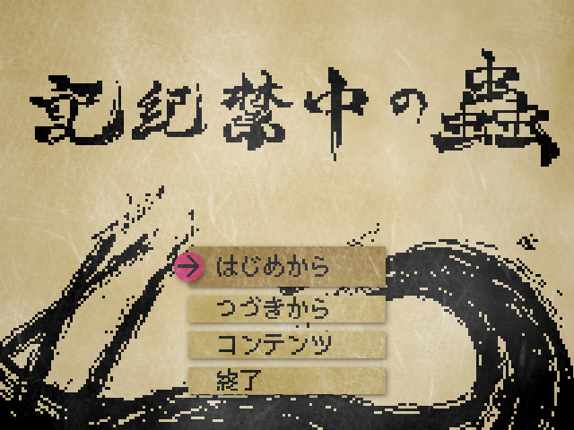
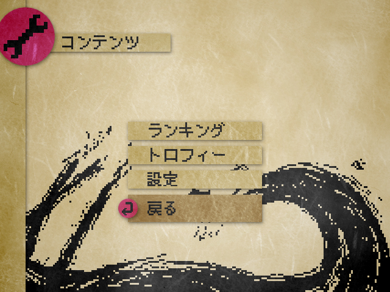
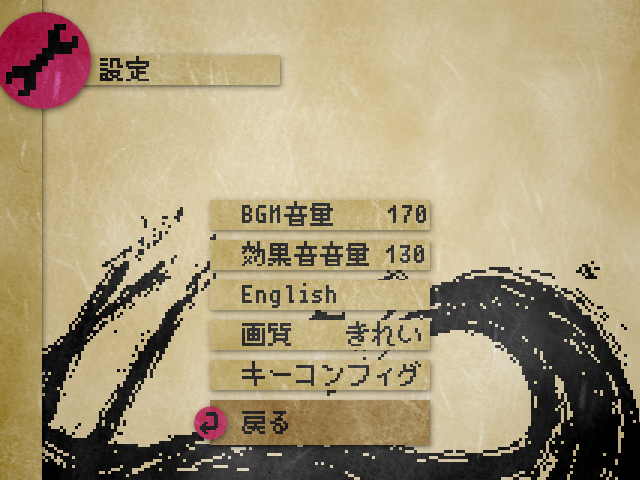

操作方法
プレイ全般
- ZEnter
- 決定
- Z
- ジャンプ
- X
- ショット
- ←→
- 移動
- ↑↓
- はしご
- Space
- メニュー(アイテムを見る、使う)
- ↓
- その場を調べる(看板を読む、セーブを取る等)
キーの割り当ては設定で変更できます。
ゲームパッドには対応しておりませんので、JoyToKey等をご利用ください。
メインメニュー

- はじめから
- 始めからプレイします。セーブデータが残っていた場合、削除されます。
- つづきから
- 最後にセーブした場所からプレイを再開します。
- コンテンツ
- コンテンツメニューを開きます。詳しくはこの下に記載しています。
- 終了
- ゲームを終了します。
コンテンツ

- ランキング
- ランキングを見ることができます。オフラインですが、クリアタイムの早い順に最大20件まで表示されます。
- トロフィー
- 取得したトロフィーを見ることができます。トロフィーは始めからプレイしても保持されます。
トロフィーは全部で7種類ありますので、コンプリートを目指してみてください。 - 設定
- 設定画面を開きます。詳しくは下に記載しています。
設定

- BGM音量
- ←→でBGMの音量を0~255まで変更できます。
- 効果音音量
- ←→でSEの音量を0~255まで変更できます。
- English(日本語)
- Enterで言語を切り替えます。ストーリーの言語は変更できません。
- 画質
- Enterで画質を切り替えます。「軽量」と「きれい」の2種類です。
- キーコンフィグ
- キーコンフィグ画面を開きます。
変更したい項目のところでEnterを押してから、新しく設定したいキーを押してください。
左下のリセットで全てデフォルトに戻ります。